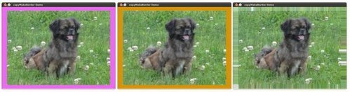

Adding borders to your images¶
Goal¶
In this tutorial you will learn how to:
- Use the OpenCV function copyMakeBorder to set the borders (extra padding to your image).
Theory¶
Note
The explanation below belongs to the book Learning OpenCV by Bradski and Kaehler.
In our previous tutorial we learned to use convolution to operate on images. One problem that naturally arises is how to handle the boundaries. How can we convolve them if the evaluated points are at the edge of the image?
What most of OpenCV functions do is to copy a given image onto another slightly larger image and then automatically pads the boundary (by any of the methods explained in the sample code just below). This way, the convolution can be performed over the needed pixels without problems (the extra padding is cut after the operation is done).
In this tutorial, we will briefly explore two ways of defining the extra padding (border) for an image:
- BORDER_CONSTANT: Pad the image with a constant value (i.e. black or

- BORDER_REPLICATE: The row or column at the very edge of the original is replicated to the extra border.
This will be seen more clearly in the Code section.
- BORDER_CONSTANT: Pad the image with a constant value (i.e. black or
Code¶
What does this program do?
Load an image
Let the user choose what kind of padding use in the input image. There are two options:
- Constant value border: Applies a padding of a constant value for the whole border. This value will be updated randomly each 0.5 seconds.
- Replicated border: The border will be replicated from the pixel values at the edges of the original image.
The user chooses either option by pressing ‘c’ (constant) or ‘r’ (replicate)
The program finishes when the user presses ‘ESC’
The tutorial code’s is shown lines below. You can also download it from here
#include "opencv2/imgproc/imgproc.hpp"
#include "opencv2/highgui/highgui.hpp"
#include <stdlib.h>
#include <stdio.h>
using namespace cv;
/// Global Variables
Mat src, dst;
int top, bottom, left, right;
int borderType;
Scalar value;
char* window_name = "copyMakeBorder Demo";
RNG rng(12345);
/** @function main */
int main( int argc, char** argv )
{
int c;
/// Load an image
src = imread( argv[1] );
if( !src.data )
{ return -1;
printf(" No data entered, please enter the path to an image file \n");
}
/// Brief how-to for this program
printf( "\n \t copyMakeBorder Demo: \n" );
printf( "\t -------------------- \n" );
printf( " ** Press 'c' to set the border to a random constant value \n");
printf( " ** Press 'r' to set the border to be replicated \n");
printf( " ** Press 'ESC' to exit the program \n");
/// Create window
namedWindow( window_name, CV_WINDOW_AUTOSIZE );
/// Initialize arguments for the filter
top = (int) (0.05*src.rows); bottom = (int) (0.05*src.rows);
left = (int) (0.05*src.cols); right = (int) (0.05*src.cols);
dst = src;
imshow( window_name, dst );
while( true )
{
c = waitKey(500);
if( (char)c == 27 )
{ break; }
else if( (char)c == 'c' )
{ borderType = BORDER_CONSTANT; }
else if( (char)c == 'r' )
{ borderType = BORDER_REPLICATE; }
value = Scalar( rng.uniform(0, 255), rng.uniform(0, 255), rng.uniform(0, 255) );
copyMakeBorder( src, dst, top, bottom, left, right, borderType, value );
imshow( window_name, dst );
}
return 0;
}
Explanation¶
First we declare the variables we are going to use:
Mat src, dst; int top, bottom, left, right; int borderType; Scalar value; char* window_name = "copyMakeBorder Demo"; RNG rng(12345);
Especial attention deserves the variable rng which is a random number generator. We use it to generate the random border color, as we will see soon.
As usual we load our source image src:
src = imread( argv[1] ); if( !src.data ) { return -1; printf(" No data entered, please enter the path to an image file \n"); }
After giving a short intro of how to use the program, we create a window:
namedWindow( window_name, CV_WINDOW_AUTOSIZE );
Now we initialize the argument that defines the size of the borders (top, bottom, left and right). We give them a value of 5% the size of src.
top = (int) (0.05*src.rows); bottom = (int) (0.05*src.rows); left = (int) (0.05*src.cols); right = (int) (0.05*src.cols);
The program begins a while loop. If the user presses ‘c’ or ‘r’, the borderType variable takes the value of BORDER_CONSTANT or BORDER_REPLICATE respectively:
while( true ) { c = waitKey(500); if( (char)c == 27 ) { break; } else if( (char)c == 'c' ) { borderType = BORDER_CONSTANT; } else if( (char)c == 'r' ) { borderType = BORDER_REPLICATE; }
In each iteration (after 0.5 seconds), the variable value is updated...
value = Scalar( rng.uniform(0, 255), rng.uniform(0, 255), rng.uniform(0, 255) );
with a random value generated by the RNG variable rng. This value is a number picked randomly in the range
![[0,255]](../../../../../_images/math/7e5ded5375850a711f7d2965125b2e6cffb03867.png)
Finally, we call the function copyMakeBorder to apply the respective padding:
copyMakeBorder( src, dst, top, bottom, left, right, borderType, value );
The arguments are:
- src: Source image
- dst: Destination image
- top, bottom, left, right: Length in pixels of the borders at each side of the image. We define them as being 5% of the original size of the image.
- borderType: Define what type of border is applied. It can be constant or replicate for this example.
- value: If borderType is BORDER_CONSTANT, this is the value used to fill the border pixels.
We display our output image in the image created previously
imshow( window_name, dst );
Results¶
After compiling the code above, you can execute it giving as argument the path of an image. The result should be:
- By default, it begins with the border set to BORDER_CONSTANT. Hence, a succession of random colored borders will be shown.
- If you press ‘r’, the border will become a replica of the edge pixels.
- If you press ‘c’, the random colored borders will appear again
- If you press ‘ESC’ the program will exit.
Below some screenshot showing how the border changes color and how the BORDER_REPLICATE option looks:

{kind=link}
Help and Feedback
You did not find what you were looking for?- Ask a question on the Q&A forum.
- If you think something is missing or wrong in the documentation, please file a bug report.